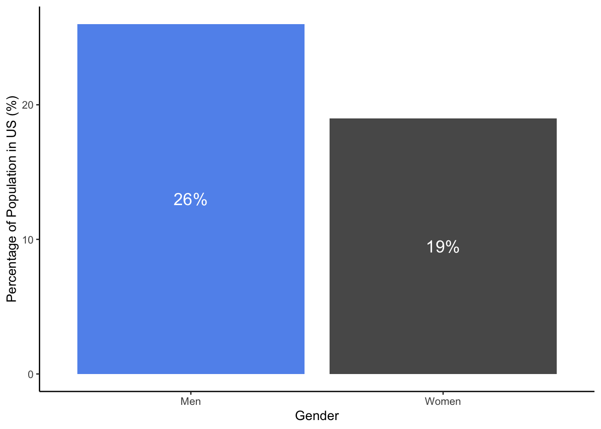
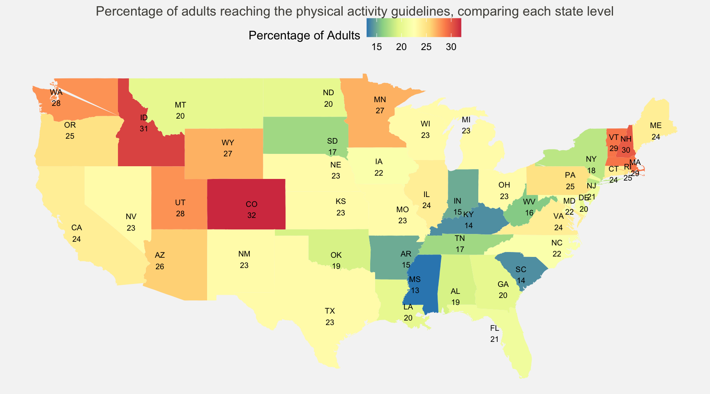

| Variable | Class | Description |
|---|---|---|
| count | double | ID |
| state | character | Name of the state in the United States |
| sex | character | Gender - Male or female |
| work_status | character | Working or non working |
| exercise | double | Percentage of adults which met the physical activity guidelines in the United Stastes |
WHY DOES IT MATTER?
Keeping active is essential for maintaining physical health and weight. Despite the benefits of being physically active, physical inactivity is identified as the fourth leading risk factor for death globally. Major implications include a rise of health conditions, such as stroke, heart disease, type 2 diabetes and certain types of cancer.
According to CDC (2022), the US obesity prevalence has increased from 30.5% to 41.9% from 2000 to 2020. Obesity also leads to a significant medical costs in the United States, where the estimated annual medical costs was around $173 billion in 2019.
AIM OF STUDY
The purpose of the blog is to discuss the following:
- Key statistics about physical activity in the United States,
- Demographics (gender and work status) of adults who met the federal physical activity guidelines in the United States,
- Geographic differences in each state in the United States among the adults who met the federal physical activity guidelines in the United States.
In this analysis, my study will focus on the continental United States, excluding Alaska, Hawaii and the other Pacific Islands. These are mainly for practical reasons as they would skewed the state averages.
The r packages used in these analysis consist of Wickham et al. (2019), Wickham (2016), Di Lorenzo (2022), Pebesma (2018), Zhu (2021) and Garnier et al. (2021).
DATA SOURCE
The dataset is been obtained from Mock (2022), in which the link of the data can be obtained here.
The data dictionary for the data set has been given below. They define the variables and their types in each of the data sets.
Note
The Physical Activity Guidelines for Americans can be obtained from DHHS (2018).
It is issued by the U.S. Department of Health and Human Service (DHHS). To meet the physical activity guidelines, adults should reach at least 150 minutes a week of moderate-intensity or 75 mins a week of vigorous-intensity aerobic activity, or an equivalent combination of moderate- and vigorous-intensity aerobic activity.
ANALYSIS
KEY STATISTICS
- On average, only about 22.52% of adults in US met the physical activity guideline.
- Male exercises more compared to female in US as shown in Table 1 and Figure 1.
- Working adults exercises more compared to non working adults in US as shown in Table 2 and Figure 2.
- Percentage of adults who reach the guideline varies by state, where the most active state is Colorado reaching around 32% and Mississippi being the least active state - around 13.5%, as shown in Figure 4.
Exercise Rate Comparison - Male VS Female
| Gender | Average Excercise Rate (%) |
|---|---|
| Male | 26 |
| Female | 19 |

On average, 26 % of male adults reach the physical activity guidelines while only 19 % of female adults work out sufficiently. This is the similar issue recognised worldwide, where women are less active than men across most countries. Gender gap in physical activity is mainly due to concerns about stereotypes, sociocultural norms and attitudes towards physical activity since childhood. Cla (2018) found that girls during teenage years tend to experience less confidence and less enjoyment from sports as compared to boys, which then shape their attitudes to physical activity into adulthood. Apart from that, there are less investments in women and girls’ sports, including access to transport, coaching and access to equipment facilities. In adulthood, apart from managing work, women still play a significant role in childcare and managing household, which then lead to less available time to work out.
Exercise Rate Comparison - Working VS Non working
| Work Status | Average Excercise Rate (%) |
|---|---|
| Working | 24 |
| Nonworking | 18 |

On average, 24 % of working adults reach the physical activity guidelines as compared to 18 % of non working adults. This maybe associated to the high costs of gyms, where people who are working are more likely to afford the costs as compared to who aren’t.
Geographic Differences? - What about exercise rate in each state in US?
As observed in Figure 3 and Figure 4, the percentage of adults reaching the national exercise target varies between states. As mentioned before, the average national level is 22.52% , which represents the percentage of adults reaching the national physical activity guideline. Figure 3 shows which states are above the national average, below the national average or around the national average. Figure 4 then shows the disparity of the percentage of adults reaching the national target level in each state.
Counties in the central such as Colorado and Utah as well as along the west coasts such as California are much more active where there are higher percentage of adults having more exercise than the national average as observed in Figure 3. Among which, Colorado is the most active state as shown in Figure 4, around 32% of adults meeting the national physical activity guidelines. David Bassett, co-director of the University of Tennessee’s Obesity Research Center points out that Colorado is one of the wealthy regions in the country, and the temperate climate as well as access to trails encourage people to pursue outdoor activities (Suddath (2009)).
In contrast, Figure 3 shows that most of the states in the southeast are below than the national average, such as Kentucky, Mississippi, West Virginia and South Carolina. We can also observe that Mississippi being the least active state in Figure 4 where only 13% of adults reaching the national target.
These were discussed in Suddath (2009), where the South’s weather is hot and humid, therefore discouraging people from doing physical activities during summer, unlike the healthier states such as California. The lack of public transportation and access to sidewalks in the region also contribute to the problem, as for most people, the best way to commute is by car. These have also led to a high percentage of health issues such as heart disease and hypertension among the population in that region.

Conclusion
The federal government released the guideline for physical activities, in which adults are encouraged to perform least 150 minutes a week of moderate-intensity or 75 mins a week of vigorous-intensity aerobic activity, or an equivalent combination of moderate- and vigorous-intensity aerobic activity.
Nonetheless, only about 22.52% of adults in US is meeting the national physical activity guideline. Among which, male exercises more compared to female and working adults** exercises more compared to non working adults. In addition to that, our analysis also found that the percentage of adults who get enough physical activities vary greatly by state. The most active state is Colorado and the least active state is Mississippi.
Being physically active is vital and has many health benefits. It reduces the risks of cardiovascular disease, type 2 diabetes, cancers and anxiety. It is time to reflect on how active your lifestyle is!
References
CDC. 2022. Obesity Is a Common, Serious, and Costly Disease, July. https://www.cdc.gov/obesity/data/adult.html.
Cla, Tim. 2018. “Time to Tackle the Physical Activity Gender Gap.” Health (Irvine. Calif) 6: e1077–86.
DHHS. 2018. Physical Activity Guidelines for Americans, 2nd Edition. https://health.gov/sites/default/files/2019-09/Physical_Activity_Guidelines_2nd_edition.pdf.
Di Lorenzo, Paolo. 2022. Usmap: US Maps Including Alaska and Hawaii. https://CRAN.R-project.org/package=usmap.
Garnier, Simon, Ross, Noam, Rudis, Robert, Camargo, et al. 2021. viridis - Colorblind-Friendly Color Maps for r. https://doi.org/10.5281/zenodo.4679424.
Mock, Thomas. 2022. “Tidy Tuesday: A Weekly Data Project Aimed at the r Ecosystem.” https://github.com/rfordatascience/tidytuesday.
Pebesma, Edzer. 2018. “Simple Features for R: Standardized Support for Spatial Vector Data.” The R Journal 10 (1): 439–46. https://doi.org/10.32614/RJ-2018-009.
Suddath, Claire. 2009. “Why Are Southerners so Fat?” Time, July. http://content.time.com/time/health/article/0,8599,1909406,00.html.
Wickham, Hadley. 2016. Ggplot2: Elegant Graphics for Data Analysis. Springer-Verlag New York. https://ggplot2.tidyverse.org.
Wickham, Hadley, Mara Averick, Jennifer Bryan, Winston Chang, Lucy D’Agostino McGowan, Romain François, Garrett Grolemund, et al. 2019. “Welcome to the tidyverse.” Journal of Open Source Software 4 (43): 1686. https://doi.org/10.21105/joss.01686.
Zhu, Hao. 2021. kableExtra: Construct Complex Table with ’Kable’ and Pipe Syntax. https://CRAN.R-project.org/package=kableExtra.